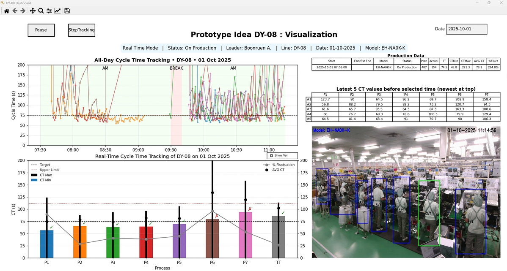
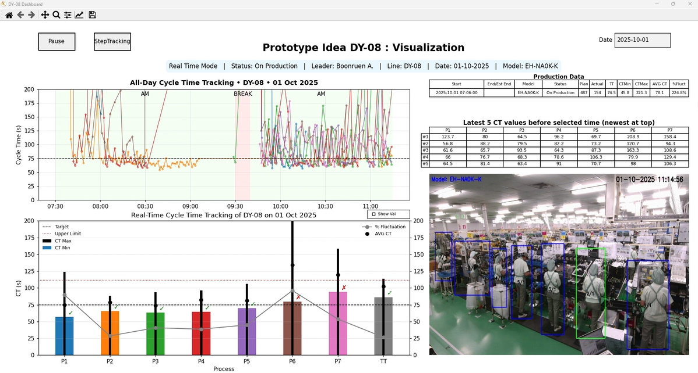

Thammasat University, Bangkok, Thailand.
Bachelor of Engineering in Chemical Engineering
- Relevant Coursework: Basic Computer Programming
- Senior Project: Absorbance Material
Master’s Degree Applicant • Computer Vision • Robotics • Web
Scan to open this portfolio
Name: Thunyasiri Jirachaiyapunt
Contact: thunyasiri.jir@gmail.com
LinkedIn: https://www.linkedin.com/in/thunyasiri-jirachaiyapunt-546162200/
Bio: An engineer determined to transition into software, driven by passion for computer vision, robotics, and intelligent systems. Pursuing a Master’s in Software Engineering is my next step to grow, innovate, and reshape my career around meaningful software solutions.
Bachelor of Engineering in Chemical Engineering

Role: Laboratory Assistant (Intern)

Role: Process Engineer
Role: Process Quality Improvement Engineer
Role: Production Innovation Engineer

List your coursework or a short description here.

Briefly describe your notable academic project(s) here.
List your coursework or a short description here.
Briefly describe your notable academic project(s) here.


Objective: Reduce QC operating time by eliminating repetitive tasks, improving productivity, enhancing data accuracy, achieving a paperless workflow, and creating a better working environment. The approach focuses on personalized/customized QC operations with low investment, developed in-house using Excel VBA.

Before-and-after workflow: Demonstrates how Excel VBA integrates data flows from various measurement tools (QR code scanners, Vernier calipers, micrometers, height gauges, dial gauges, microscopes, etc.) into digital forms. These forms follow an approval route, managed and stored in a NAS directory system. Once approved, the system archives structured data for easy retrieval and accessibility.
File navigator tool for searching, creating, or deleting digital forms within the NAS directory.
File transfer management: Show tool for display move from an Inspection PC to a Public PC with a queue system to manage workflow continuity.
File transfer management: Show tool for display move from a Public PC to another Public PC with a queue system to manage workflow continuity.


Before-and-after solution: AMR replaces manual material handling, specifically in transporting assembly parts, motors, and packing materials in the Hair Dryer Assembly Area, reducing reliance on workers for these tasks.
Implementation scope: AMR covers all Hair Dryer Assembly Lines. It autonomously moves material carts from start to end points as requested by users. Detailed layouts and route maps highlight both AMR operations and worker interactions at start and end points.

User interface: Workers interact with AMR via a web app accessible on Panel PCs and handheld devices. The app shows AMR task requests, status updates, and ongoing operations. Panel PCs support start-point operations, while handheld devices are used at end points.

 

Before-and-after solution: AI Vision enables real-time process tracking on Hair Dryer Assembly Lines. It monitors cycle times and detects abnormalities during the packing process, preventing part-missing issues and balancing workflows for higher efficiency. All data is recorded for traceability and future improvements.


Hardware setup: Tinker Board with Debian OS, USB cameras, alarm speakers, and display monitors, running Python-based AI programs integrated with computer vision.

Software & AI frameworks: Python development in VS Code, leveraging OpenCV, PyTorch, Keras, TensorFlow, and YOLOv5. Training and optimization performed with Roboflow, Teachable Machine, and Google Colab. The system is designed to be scalable, configurable, and robust for future expansion.
Prototyping assistants that connect sensors, APIs, and UI.
Building small gameplay prototypes and physics experiments.
Lightweight utilities for capture, labeling, and on-device ML.
Deciding to change my career path into software is both a challenge and a calling that I fully embrace. Through a Master’s degree in Software Engineering, I aim to transform my passion for technology into lasting contributions—developing solutions that connect research, real-world needs, and human impact. With determination, adaptability, and a vision for meaningful innovation, I am ready to take this decisive step forward and grow as both a researcher and engineer.